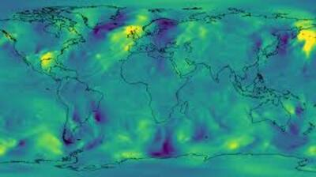
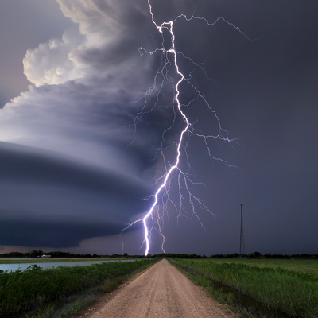
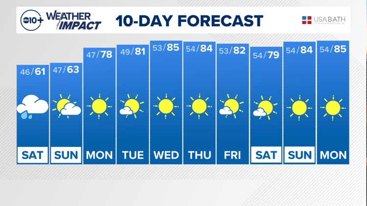

Cuaca: Fenomena Alam yang Selalu Tak Terduga
Cuaca adalah kondisi atmosfer di suatu tempat dalam rentang waktu yang relatif pendek jam hingga hari. Meskipun sering dianggap “biasa”, perubahan cuaca bisa berdampak besar pada aktivitas manusia, pertanian, transportasi, bahkan kenyamanan dan kesehatan sehari-hari.
Pada artikel ini, kita akan membahas:
Setiap seksi akan dilengkapi ilustrasi gambar sebagai visual pendukung.
1. Definisi & Unsur-Unsur Cuaca
Cuaca (weather) mencakup kondisi atmosfer di suatu tempat dalam waktu singkat: suhu, kelembapan, tekanan udara, angin, curah hujan, awan, dan kondisi langit (cerah/berawan).
.jpg)
Unsur-unsur utama cuaca
Semua unsur ini saling berkaitan: perubahan satu unsur dapat memicu perubahan unsur lainnya. Sebagai contoh, udara hangat dan lembap yang naik akan mendingin, uap ketika mencapai titik jenuh akan mengembun menjadi awan dan mungkin hujan.
2. Bagaimana Cuaca Terbentuk
Untuk memahami cuaca, kita perlu memahami proses fisika atmosfer:
a. Perbedaan suhu & tekanan
Perbedaan suhu antara dua wilayah menyebabkan perbedaan tekanan udara. Udara akan bergerak dari daerah bertekanan tinggi ke daerah bertekanan rendah: inilah angin.
b. Pergerakan massa udara
Massa udara (air mass) adalah kumpulan udara yang memiliki karakter suhu dan kelembapan relatif sama. Ketika dua massa udara dengan karakter berbeda bertemu, terbentuk front (front hangat, front dingin, front stasioner). Front ini sering menjadi pemicu hujan atau badai ringan.
c. Proses konveksi & naik turunnya udara
Udara yang dipanaskan permukaannya akan naik (konveksi). Saat naik, udara mendingin dan uap airnya mengembun membentuk awan. Jika kondensasi berlangsung intens maka terjadi hujan atau badai lokal.
d. Sirkulasi global & pola iklim besar
Di skala global, sistem tekanan besar (siklon, antisiklon), arus atmosfer seperti Jet Stream, dan fenomena seperti El Niño / La Niña memengaruhi pola cuaca jangka menengah hingga panjang. Misalnya, fenomena El Niño di Pasifik dapat memicu kekeringan di satu wilayah dan hujan ekstrem di wilayah lain.
3. Cuaca Ekstrem
Selain cuaca “biasa” seperti hujan ringan atau berawan, alam juga menghadirkan fenomena ekstrem yang bisa membahayakan:
a. Badai / angin kencang / topan / siklon
Ketika tekanan rendah sangat kuat dan rotasi atmosfer cukup besar, terbentuk badai siklon tropis (topan, typhoon, hurricane). Angin keras, hujan lebat, dan gelombang tinggi menjadi ancaman utama.
b. Badai petir & kilat
Awan cumulonimbus yang sangat tinggi menghasilkan muatan listrik di awan, menyebabkan kilat dan petir saat terjadi pelepasan muatan. Petir bisa berbahaya bagi manusia, hewan, dan struktur bangunan.
c. Banjiir & longsor
Curah hujan ekstrem dalam waktu singkat dapat menyebabkan banjir bandang, terutama di daerah berbukit atau dengan sistem drainase buruk. Longsor bisa terjadi jika tanah sudah jenuh air dan tidak punya daya tumpu yang cukup.
d. Kekeringan & gelombang panas
Sebaliknya, periode panjang tanpa hujan dan radiasi matahari tinggi bisa menghasilkan gelombang panas dan kekeringan. Tanaman gagal tumbuh, suplai air terbatas, dan risiko kebakaran hutan meningkat.
e. Hujan es & hailstorms
Dalam kondisi khusus, awan sangat tinggi dan turbulen bisa membentuk batu es (hail). Hujan es bisa merusak tanaman, kendaraan, atap rumah, dan struktur lemah lainnya.
4. Peran Prakiraan Cuaca dalam Kehidupan
Tanpa prakiraan cuaca, banyak sektor akan sangat terganggu:
Seiring perkembangan teknologi, prakiraan cuaca semakin akurat dan dengan cakupan lebih luas waktu (7 hari, 14 hari, hingga prediksi musiman). Model numerik dan data observasi satelit & radar menjadi fondasi utama.
5. Dampak Perubahan Iklim terhadap Pola Cuaca
Perubahan iklim global terutama peningkatan gas rumah kaca menyebabkan perubahan pola cuaca yang semakin ekstrem dan tak menentu. Beberapa dampaknya adalah:
Para ilmuwan terus memodelkan skenario masa depan dan mengamati data iklim jangka panjang untuk memahami dan memitigasi dampak ini.
6. Tips Beradaptasi di Tengah Cuaca Ekstrem
Berikut beberapa tips praktis agar kita tetap aman dan nyaman menghadapi cuaca ekstrem:
1. Pantau prakiraan & peringatan dini
Gunakan aplikasi cuaca, situs BMKG atau institusi meteorologi lokal. Ikuti peringatan bencana dari lembaga resmi.
2. Persiapan rumah & lingkungan
3. Siapkan kit darurat
Selalu punya senter, baterei cadangan, air minum, obat-obatan dasar, makanan tahan lama, dan perlengkapan komunikasi.
4. Jaga kesehatan tubuh
Saat gelombang panas: konsumsi air banyak, hindari aktivitas berat di siang hari, pakai pakaian ringan.Saat hujan deras / badai: hindari berada di luar, pastikan perlindungan listrik, dan jauhi pohon besar.
5. Penyesuaian aktivitas
Rencanakan kegiatan luar ruang pada jam dengan cuaca percaya (pagi atau sore). Hindari perjalanan jauh saat prakiraan buruk.
6. Partisipasi komunitas & edukasi
Edukasikan masyarakat tentang mitigasi bencana, sistem peringatan dini, dan pentingnya pelestarian lingkungan (karena perubahan iklim punya andil besar).
Penutup
Cuaca bukanlah sekadar “hujan atau cerah”. Ia adalah hasil interaksi kompleks antara suhu, kelembapan, tekanan, angin, dan kondisi atmosfer lainnya dirangkai dalam sistem dinamis di skala lokal hingga global. Fenomena cuaca ekstrem semakin sering terjadi di era perubahan iklim, sehingga peran prakiraan, adaptasi, dan pengurangan emisi menjadi sangat penting.
Semoga artikel ini memperluas wawasanmu tentang cuaca dan memberi insight agar kita bisa lebih bijak menghadapi tantangannya.